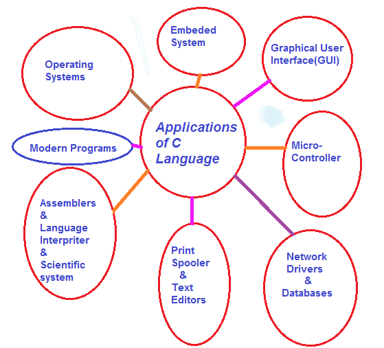

Applications of C Language
Application: Application software is a type of computer program that performs a specific personal, educational, and business function. Each application is designed to assist end-users in accomplishing a variety of tasks, which may be related to productivity, creativity, or communication.
It is a true fact that C is one of the oldest and most fundamental languages which is widely used across the world. C is fast, portable, and has a rich library. C is a middle-level language but it has benefits over of low-level languages as well as high-level languages. C has used in almost every technical domains. C is used to develop applications as well as for system software development.
Here we learn and explore about various applications of C then you will fall in love with C Language. It is one of the most used programming language for application developement and system software developement.
The development of system software and desktop applications is mostly accomplished via the use of C programming. The following are some examples of C programming applications.